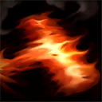

起手裝備
 長劍
長劍

蒐集者、狂暴利刃、多明尼克、無盡、嗜血者保留；7.3霰彈暴擊調整已在技能欄，狂風不塞進鞋線。


五件成裝與鞋子分開列示；起手與核心是購買路線，不是額外佔用的成裝欄位。鞋子完成時機仍依對線壓力與回城金錢調整。


瞬疾步法、即刻衝擊、暴君、眼球、絕對專注與最新表一致；不把普攻續航改成必須擊殺才生效的路線。


閃現保留進場角度與撤退彈性，重擊維持打野必備。 本英雄以射手／鬥士／野區發育核心定位使用；7.3b不改重擊主動斬殺值，需看進化與充能。
加點優先：Q > E > W
維持Q > E > W，前三等Q/E/Q、四級補W，提升清營傷害；三級需立即抓人或防入侵時可提早W。
散彈槍普攻一次射出多顆子彈並需裝填；多顆命中同一目標時傷害更高。
有後續版本調整的項目以較新數值為準；未列出者不代表完整技能成長表。

發射火藥彈造成傷害，撞牆或延遲後返回爆炸，再次造成範圍物理傷害。
投出煙霧彈造成傷害與緩速，區域內敵人視野大幅受限。
向指定方向衝刺並裝填一發子彈，同時獲得防禦；普攻可縮短冷卻。
發射爆裂彈造成高額物理傷害並讓自己後退，彈體爆炸後對錐形範圍再造成傷害。
近距散彈與裝填節奏、Q 撞牆回彈決定傷害，暴擊裝成形前避免空追。已核對既有技能摘要、連招操作條件及前中後期說明；沒有足夠證據改寫其餘完整技能成長數值。
3技貼近 → 近距普攻 → 1技撞牆 → 普攻 → 4技收尾
利用牆面讓一技快速回爆，近距普攻吃到更多子彈；大絕同時斬殺並拉開距離。
2技煙霧 → 3技 → 普攻 → 1技 → 4技
先用煙霧彈限制視野與走位，再以三技調整槍口角度，適合河道與狹窄野區追擊。
1技消耗 → 3技換位 → 普攻 → 2技封路 → 4技後退
保持在前排後方輸出，一技與煙霧封住路線，最後用大絕後座力離開敵方突進範圍。
維持Q > E > W，前三等Q/E/Q、四級補W，提升清營傷害；三級需立即抓人或防入侵時可提早W。 利用散彈擊退野怪與猛龍過江疊加物防，保持高血量完成快速清野。葛雷夫沒有穩定硬控，Gank 應優先配合有控制的線路，或入侵較弱的發育型打野。
蒐集者 → 狂暴利刃 → 多明尼克的問候為預設前段順序。近距散彈與裝填節奏、Q 撞牆回彈決定傷害，暴擊裝成形前避免空追。後兩格依敵方實際威脅替換；先完成關鍵核心，再決定防裝與穿透，支援物件前確認重擊充能及隊友線權。
把自己當短射程輸出核心，站在前排之後持續找角度。大絕可用來斬殺或後座力調整位置，避免為了貼臉多顆子彈而跨越安全線。
以同頁打野威脅名單拉姆斯、奈德麗、趙信更新，有利名單僅是既有機制判斷，排除與威脅重複者；葛雷夫入侵仍看兩側線權、血量及關鍵技能，不當作固定單挑勝率。
對局名單是機制與分路判斷，不代表固定勝率；需同時看雙方熟練度、兵線與陣容。
替換以本頁五件成裝為基準；同一格建議擇一。二、三級鞋是一條升級線，換鞋時整條同步；魔劍進化不占新欄位。
高
觸發：敵方前排物防／魔防成形，或近身普攻威脅明顯。
已帶對應穿透或冰霜之心時保留，不重複購買；依實際傷害類型決定。
高
觸發：主要死亡原因是一輪集火，無法完成輸出或控制。
嗜血者 → 守護天使
物理爆發或進場容易先被集火時，末件改守護天使；復活期間仍需要隊友掩護。
物理爆發或進場容易先被集火時，末件改守護天使；復活期間仍需要隊友掩護。
高
觸發：敵方法術先手或持續魔法傷害成為主要威脅。
嗜血者 → 自然之力
依魔法傷害壓力補魔防；已有命脈裝時改用自然之力，避免重複命脈。
依魔法傷害壓力補魔防；已有命脈裝時改用自然之力，避免重複命脈。
高
觸發：魔法傷害與控制鏈影響生存或輸出。
貪婪護脛 → 水星之靴
魔法傷害及可被韌性縮短的控制占主導時，鞋線整條改水星之靴→鎖鏈軍靴。
魔法傷害及可被韌性縮短的控制占主導時，鞋線整條改水星之靴→鎖鏈軍靴。
韌性不能縮短所有控制，例如擊飛；護盾與解控各有適用條件。
高
觸發：敵人持續回復令集火失敗。
多明尼克的問候 → 致死宣告
回復威脅比原穿透裝的特殊效果更重要時，替換而非再疊一件。
回復威脅比原穿透裝的特殊效果更重要時，替換而非再疊一件。
7.3d差異核對：本頁核對官方英雄／裝備差異與現行配置參照；未列的技能不表示已完成逐級實測。查看校正範圍。
本頁校正版本：7.3d；校正日期：2026-10-25。
參考來源標示版本：7.3c
本輪核對官方版本差異、道具/符文引用、五成裝與鞋線、逐級加點及情境替換一致性。Tier及玩法屬本站編輯判斷，不是官方排名或台服勝率；未公開的全級技能表不推算。
評級理由：7.3c 維持 C（本站判斷）。維持C；7.3b打野表仍C，短射程且缺硬控，不能用舊強勢印象上調。 7.3c 未改動此分路的英雄數值，沒有新證據只因版本號而升降。
Riot 官方資料 ↗ · Riot 官方資料 ↗ · Riot 官方資料 ↗ · Riot 官方資料 ↗ · Riot 官方資料 ↗ · WildRiftFire 參考攻略 ↗
7.3c 的直接英雄倍率改動屬符文大亂鬥；本召喚峽谷配置承接 7.3b。未把模式專屬增削轉為峽谷增削。
五件成裝、獨立鞋線、起手、核心、情境替換引用與一般符文列別均重新檢查；移除裝備不列入當前推薦。
歷史資料有後續調整時，以較新版本數值為準。
| 項目 | 調整前 | 調整後 |
|---|---|---|
| 霰彈槍暴擊傷害倍率 | 1.3 | 1.5 |
| 項目 | 調整前 | 調整後 |
|---|---|---|
| 基礎生命 | 660 | 630 |
| 每級生命成長 | 128 | 136 |